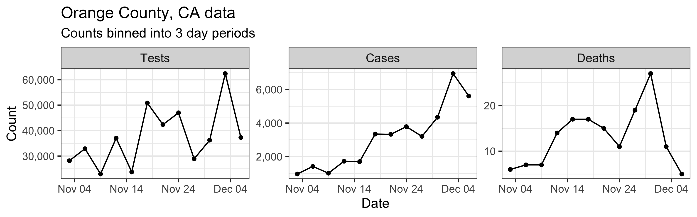

Orange County, CA COVID Situation Report Nov 1, 2020 - Dec 6, 2020
Last updated: 2020-12-21
Checks: 5 2
Knit directory: uci_covid_modeling2/
This reproducible R Markdown analysis was created with workflowr (version 1.6.2). The Checks tab describes the reproducibility checks that were applied when the results were created. The Past versions tab lists the development history.
The R Markdown file has unstaged changes. To know which version of the R Markdown file created these results, you’ll want to first commit it to the Git repo. If you’re still working on the analysis, you can ignore this warning. When you’re finished, you can run wflow_publish to commit the R Markdown file and build the HTML.
Great job! The global environment was empty. Objects defined in the global environment can affect the analysis in your R Markdown file in unknown ways. For reproduciblity it’s best to always run the code in an empty environment.
The command set.seed(20201209) was run prior to running the code in the R Markdown file. Setting a seed ensures that any results that rely on randomness, e.g. subsampling or permutations, are reproducible.
Great job! Recording the operating system, R version, and package versions is critical for reproducibility.
- D_I_P plot
- IFR R0 Plot
- Model Structure
- model-inputs
- Reff Plot
- session-info-chunk-inserted-by-workflowr
- summary prep
To ensure reproducibility of the results, delete the cache directory 2020-11-01_2020-12-06_cache and re-run the analysis. To have workflowr automatically delete the cache directory prior to building the file, set delete_cache = TRUE when running wflow_build() or wflow_publish().
Great job! Using relative paths to the files within your workflowr project makes it easier to run your code on other machines.
Great! You are using Git for version control. Tracking code development and connecting the code version to the results is critical for reproducibility.
The results in this page were generated with repository version bcf3831. See the Past versions tab to see a history of the changes made to the R Markdown and HTML files.
Note that you need to be careful to ensure that all relevant files for the analysis have been committed to Git prior to generating the results (you can use wflow_publish or wflow_git_commit). workflowr only checks the R Markdown file, but you know if there are other scripts or data files that it depends on. Below is the status of the Git repository when the results were generated:
Ignored files:
Ignored: .DS_Store
Ignored: .Rhistory
Ignored: .Rproj.user/
Ignored: analysis/.DS_Store
Ignored: analysis/2020-03-29_2020-05-03_cache/
Ignored: analysis/2020-05-03_2020-06-07_cache/
Ignored: analysis/2020-06-07_2020-07-12_cache/
Ignored: analysis/2020-07-12_2020-08-16_cache/
Ignored: analysis/2020-08-16_2020-09-20_cache/
Ignored: analysis/2020-09-20_2020-10-25_cache/
Ignored: analysis/2020-10-25_2020-11-29_cache/
Ignored: analysis/2020-11-01_2020-12-06_anaheim_cache/
Ignored: analysis/2020-11-01_2020-12-06_cache/
Ignored: analysis/2020-11-01_2020-12-06_irvine_cache/
Ignored: analysis/2020-11-01_2020-12-06_santa-ana_cache/
Ignored: analysis/analysis_template_city_cache/
Ignored: code/.DS_Store
Ignored: code/.Rhistory
Ignored: code/results/.DS_Store
Ignored: code/results/2020-11-01_2020-12-06/.DS_Store
Ignored: data/.DS_Store
Ignored: data/from_OCHCA/
Untracked files:
Untracked: analysis/2020-11-01_2020-12-06_anaheim.Rmd
Untracked: analysis/2020-11-01_2020-12-06_irvine.Rmd
Untracked: analysis/2020-11-01_2020-12-06_santa-ana.Rmd
Untracked: code/figure/
Untracked: code/fit_city_from_folder.R
Untracked: code/results/2020-11-01_2020-12-06/anaheim/
Untracked: code/results/2020-11-01_2020-12-06/irvine/
Untracked: code/results/2020-11-01_2020-12-06/santa-ana/
Untracked: explore_environments.R
Unstaged changes:
Modified: analysis/2020-03-29_2020-05-03.Rmd
Modified: analysis/2020-05-03_2020-06-07.Rmd
Modified: analysis/2020-06-07_2020-07-12.Rmd
Modified: analysis/2020-07-12_2020-08-16.Rmd
Modified: analysis/2020-08-16_2020-09-20.Rmd
Modified: analysis/2020-09-20_2020-10-25.Rmd
Modified: analysis/2020-10-25_2020-11-29.Rmd
Modified: analysis/2020-11-01_2020-12-06.Rmd
Modified: code/analysis_template.Rmd
Modified: code/fit_new_model.R
Modified: code/update_site.R
Note that any generated files, e.g. HTML, png, CSS, etc., are not included in this status report because it is ok for generated content to have uncommitted changes.
These are the previous versions of the repository in which changes were made to the R Markdown (analysis/2020-11-01_2020-12-06.Rmd) and HTML (docs/2020-11-01_2020-12-06.html) files. If you’ve configured a remote Git repository (see ?wflow_git_remote), click on the hyperlinks in the table below to view the files as they were in that past version.
| File | Version | Author | Date | Message |
|---|---|---|---|---|
| Rmd | bcf3831 | Damon Bayer | 2020-12-18 | Fix Reff date mismatch |
| html | bcf3831 | Damon Bayer | 2020-12-18 | Fix Reff date mismatch |
| html | ef8fef9 | Damon Bayer | 2020-12-17 | Redo 2020-12-14 Update |
| Rmd | d5a3650 | Damon Bayer | 2020-12-17 | Plot Reff Forecast |
| html | d5a3650 | Damon Bayer | 2020-12-17 | Plot Reff Forecast |
| Rmd | ad35c96 | Damon Bayer | 2020-12-16 | Slight plot modification |
| html | ad35c96 | Damon Bayer | 2020-12-16 | Slight plot modification |
| Rmd | 7c7928f | Damon Bayer | 2020-12-16 | Deaths Plot |
| html | 7c7928f | Damon Bayer | 2020-12-16 | Deaths Plot |
| Rmd | 9596b3d | Damon Bayer | 2020-12-16 | piece-wise constant IFR and R0 |
| html | 9596b3d | Damon Bayer | 2020-12-16 | piece-wise constant IFR and R0 |
| Rmd | b4111ab | Damon Bayer | 2020-12-16 | Minor plot tweaks |
| html | b4111ab | Damon Bayer | 2020-12-16 | Minor plot tweaks |
| Rmd | 41de9bf | Damon Bayer | 2020-12-16 | 2020-12-14 Update |
| html | 41de9bf | Damon Bayer | 2020-12-16 | 2020-12-14 Update |
Orange County, CA COVID-19 Situation Report, December 14, 2020
Report period: Nov 01 - Dec 06 (we don’t use the most recent data due to reporting delays)
The goal of this report is to inform interested parties about dynamics of SARS-CoV-2 spread in Orange County, CA and to predict epidemic trajectories. Methodological details are provided below and in the accompanying manuscript. We are also contributing to COVID Trends by UC Irvine project that provides data visualizations of California County trends across time and space.


Summary (statements are made assuming 95% credibility levels)
- The number of reported cases (97,089, shown as black bars in the top-middle plot above) underestimates the actual number of infections by a factor that ranges between 4.9 and 18.8. This means that we estimate that the total number of infections which occurred by December 06, 2020 is between 472,695 and 1,823,950. We estimate that the total number of infections will be between 880,151 and 2,719,116 on January 05, 2021.
- Prevalence (number of infectious individuals at any time point) is increasing and projected to be between 211,082 and 872,523 on January 05, 2021.
- Somewhere between 0.04% and 0.49% of all infections (not cases!) result in death.
- Basic reproductive number (\(R_0\)), defined as the average number of secondary infections one infectious individual produces in a completely susceptible population, is estimated to be between 2 and 3.5.
- Effective reproductive number (\(R_e\)), defined as its basic counterpart above, but allowing for some fraction of the population to be removed (recovered or deceased), is estimated to be between 0.5 and 1.7 on December 06, 2020. We want to keep \(R_e < 1\) in order to control virus transmission.
Abbreviated technical details (optional)
Our approach is based on fitting a mechanistic model of SARS-CoV-2 spread to multiple sources of surveillance data. A more fleshed out method description is in the manuscript.
Model inputs
Our method takes three time series as input: daily new tests, case counts, and deaths. However, we find daily resolution to be too noisy due to delay in testing reports, weekend effect, etc. So we aggregated/binned the three types of counts in 3 day intervals. These aggregated time series are shown below.

Model structure
We assume that all individuals in Orange County, CA can be split into 6 compartments: S = susceptible individuals, E = infected, but not yet infectious individuals, \(\text{I}_\text{e}\) = individuals at early stages of infection, \(\text{I}_\text{p}\) = individuals at progressed stages of infection (assumed 20% less infectious than individuals at the early infection stage), R = recovered individuals, D = individuals who died due to COVID-19. Possible progressions of an individual through the above compartments are depicted in the diagram below.

| Version | Author | Date |
|---|---|---|
| dcffe20 | Damon Bayer | 2020-12-16 |
Mathematically, we assume that dynamics of the proportions of individuals in each compartment follow a set of ordinary differential equations corresponding to the above diagram. These equations are controlled by the following parameters:
- Basic reproductive number (\(R_0\))
- mean duration of the latent period
- mean duration of the early infection period
- mean duration of the progressed infection period
- probability of transitioning from progressed infection to death, rather than to recovery (i.e., IFR)
We fit this model to data by assuming that case counts are noisy realizations of the actual number of individuals progressing from \(\text{I}_\text{e}\) compartment to \(\text{I}_\text{p}\) compartment. Similarly we assume that observed deaths are noisy realizations of the actual number of individuals progressing from \(\text{I}_\text{p}\) compartment to \(\text{D}\) compartment. A priori, we assume that death counts are significantly less noisy than case counts. We use a Bayesian estimation framework, which means that all estimated quantities receive credible intervals (e.g., 80% or 95% credible intervals). Width of these credible intervals encode the amount of uncertainty that we have in the estimated quantities.
R version 4.0.3 (2020-10-10)
Platform: x86_64-apple-darwin17.0 (64-bit)
Running under: macOS Big Sur 10.16
Matrix products: default
BLAS: /Library/Frameworks/R.framework/Versions/4.0/Resources/lib/libRblas.dylib
LAPACK: /Library/Frameworks/R.framework/Versions/4.0/Resources/lib/libRlapack.dylib
locale:
[1] en_US.UTF-8/en_US.UTF-8/en_US.UTF-8/C/en_US.UTF-8/en_US.UTF-8
attached base packages:
[1] stats graphics grDevices utils datasets methods base
other attached packages:
[1] coda_0.19-4 cowplot_1.1.0 stemr_0.2.0 glue_1.4.2
[5] scales_1.1.1 tidybayes_2.1.1 forcats_0.5.0 stringr_1.4.0
[9] dplyr_1.0.2 purrr_0.3.4 readr_1.3.1 tidyr_1.1.2
[13] tibble_3.0.3 ggplot2_3.3.2 tidyverse_1.3.0 fs_1.5.0
[17] lubridate_1.7.9 workflowr_1.6.2
loaded via a namespace (and not attached):
[1] Rcpp_1.0.5 lattice_0.20-41 odeintr_1.7.1
[4] assertthat_0.2.1 rprojroot_1.3-2 digest_0.6.25
[7] plyr_1.8.6 R6_2.4.1 cellranger_1.1.0
[10] backports_1.1.10 reprex_0.3.0 evaluate_0.14
[13] httr_1.4.2 pillar_1.4.6 rlang_0.4.7
[16] readxl_1.3.1 rstudioapi_0.11 whisker_0.4
[19] blob_1.2.1 rmarkdown_2.3 labeling_0.3
[22] munsell_0.5.0 broom_0.7.0 compiler_4.0.3
[25] httpuv_1.5.4 modelr_0.1.8 xfun_0.17
[28] pkgconfig_2.0.3 htmltools_0.5.0 tidyselect_1.1.0
[31] arrayhelpers_1.1-0 fansi_0.4.1 crayon_1.3.4
[34] dbplyr_1.4.4 withr_2.3.0 later_1.1.0.1
[37] distributional_0.2.0 ggdist_2.2.0 grid_4.0.3
[40] jsonlite_1.7.1 gtable_0.3.0 lifecycle_0.2.0
[43] DBI_1.1.0 git2r_0.27.1 magrittr_1.5
[46] cli_2.0.2 stringi_1.5.3 farver_2.0.3
[49] promises_1.1.1 xml2_1.3.2 ellipsis_0.3.1
[52] generics_0.0.2 vctrs_0.3.4 RColorBrewer_1.1-2
[55] tools_4.0.3 svUnit_1.0.3 hms_0.5.3
[58] yaml_2.2.1 colorspace_1.4-1 rvest_0.3.6
[61] knitr_1.30 haven_2.3.1